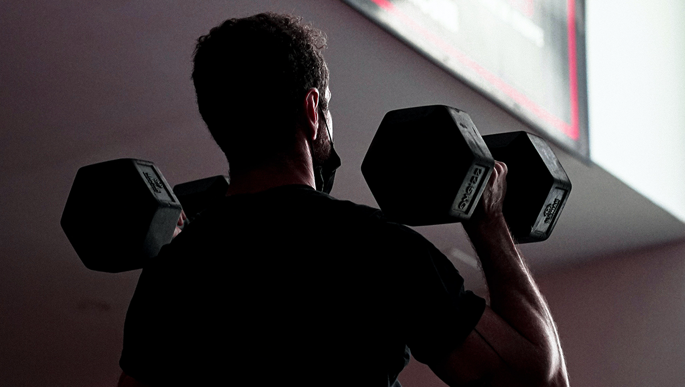
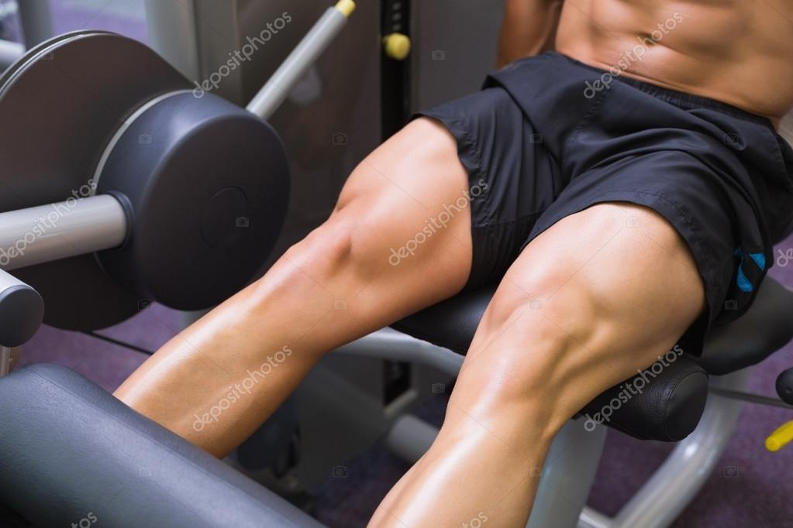
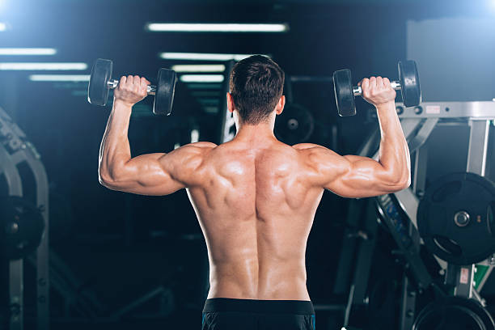
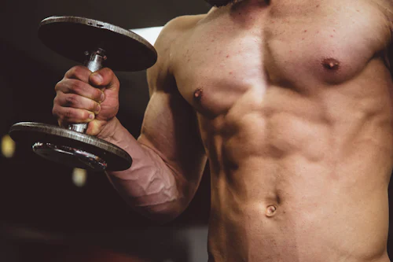

Menu Content
This is the menu content.
Menu
Tap the button in the toolbar to open the menu.
Logout
Choose Your Target Workouts

SHOULDER WORKOUT
To improve your shoulder strength and mobility, incorporate a combination
of targeted strengthening exercises, stretching, rotator cuff work,
posture awareness, gradual progression, and proper rest and recovery.

LEG WORKOUTS
To improve your leg strength and overall lower body fitness, it's crucial
to incorporate a well-rounded approach that includes a combination of
strength training, cardiovascular exercise, flexibility work, and proper
nutrition.

BACK WORKOUTS
To improve your back strength and promote a healthy spine, it's important
to incorporate a variety of exercises that target the back muscles, such
as rows, deadlifts, and pull-ups, along with incorporating core exercises,
maintaining good posture, practicing proper lifting techniques, and
allowing for adequate rest and recovery.

ABS WORKOUTS
To enhance your abdominal strength and sculpt a defined core, it's crucial
to adopt a comprehensive approach that encompasses targeted ab exercises,
progressive overload, proper form, a balanced diet, adequate hydration,
sufficient rest, and consistency in your fitness routine.